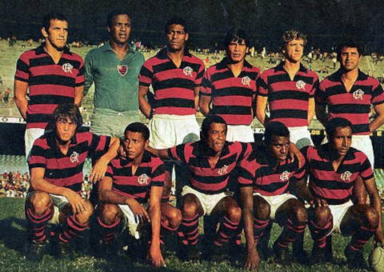

17 de novembro de 1895

O Clube de Regatas do Flamengo foi fundado em 17 de novembro de 1895, na cidade do Rio de Janeiro, Brasil. O Flamengo foi criado por um grupo de remadores liderado por José Agostinho Pereira da Cunha. Inicialmente, o clube tinha o objetivo de ser uma agremiação dedicada à prática do remo, como indicado pelo termo "Clube de Regatas" em seu nome.
O nome "Flamengo" foi escolhido em homenagem ao bairro homônimo no Rio de Janeiro, onde o clube foi fundado. Ao longo dos anos, o Flamengo expandiu suas atividades esportivas para incluir o futebol, tornando-se um dos clubes mais populares e bem-sucedidos do Brasil em diversas modalidades esportivas.
O Flamengo tem uma enorme base de torcedores apaixonados e conquistou inúmeros títulos nacionais e internacionais ao longo de sua história, tornando-se uma instituição de grande destaque no cenário esportivo brasileiro.
MAIORES ÍDOLOS DO FLAMENGO
Zico: Arthur Antunes Coimbra, conhecido como Zico, é amplamente considerado o maior ídolo da história do Flamengo. Ele foi um meio-campista extraordinário, artilheiro e ícone do futebol brasileiro. Zico jogou a maior parte de sua carreira no Flamengo, contribuindo para inúmeras conquistas, incluindo a Libertadores e o Mundial de Clubes em 1981.
Adriano "Imperador": Adriano Leite Ribeiro, apelidado de "Imperador", teve uma passagem marcante pelo Flamengo. Ele foi artilheiro e peça fundamental na conquista do Campeonato Brasileiro de 2009, além de ter uma trajetória internacional de destaque.
Júnior: Leovegildo Lins da Gama Júnior, conhecido como Júnior, foi um lateral-esquerdo excepcional que teve uma longa e bem-sucedida carreira no Flamengo. Ele participou de várias conquistas, incluindo a Libertadores e o Mundial de Clubes em 1981.
Zizinho: Considerado um dos maiores jogadores da história do futebol brasileiro, Zizinho teve uma passagem destacada pelo Flamengo nas décadas de 1940 e 1950. Ele foi um meio-campista habilidoso e é lembrado com carinho pelos torcedores.
Dida: José Geraldo Soares, conhecido como Dida, é considerado um dos maiores goleiros da história do Flamengo. Ele fez parte do time que conquistou o Campeonato Carioca em 1953 e é lembrado por suas defesas marcantes.